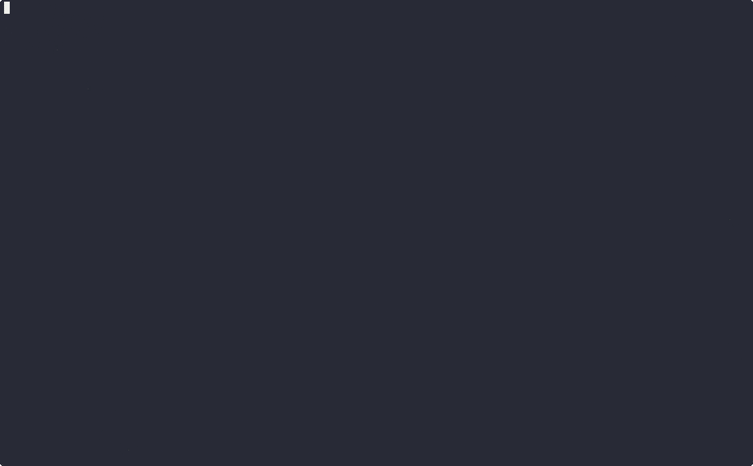

Tutorial: Part 1¶
This tutorial covers the basic concepts of SAYN and will get you going quickly. It uses the example
project created by sayn init. It assumes SAYN is setup as described in the
installation section.
This project generates some random data with a python task and performs some modelling on it with
autosql tasks.
Running SAYN¶
To get started, open a terminal, activate your virtual environment (source sayn_venv/bin/activate)
and run the following:
sayn init sayn_tutorial
cd sayn_tutorial
sayn run
This will create a new project with the contents of this tutorial and execute it.

You can open dev.db and see the tables and views created by sayn run. You can use
DB Browser for SQLite in order to view the
content of the database. As you can observe, sayn run created a small ETL process which models
battles from various tournaments.
That's it, you made your first SAYN run! We will now explain what happens in the background.
Project Overview¶
The sayn_tutorial folder has the following structure:
tutorial
├── project.yaml
├── settings.yaml
├── dags
│ └── base.yaml
├── python
│ ├── __init__.py
│ ├── load_data.py
│ └── utils
│ ├── __init__.py
│ └── log_creator.py
├── sql
│ ├── dim_arenas.sql
│ ├── dim_fighters.sql
│ ├── dim_tournaments.sql
│ ├── f_battles.sql
│ ├── f_fighter_results.sql
│ └── f_rankings.sql
├── compile
├── .gitignore
├── readme.md
└── requirements.txt
The main files are:
project.yaml: defines the SAYN project. It is shared across all collaborators.settings.yaml: defines the individual user's settings. It is unique for each collaborator and should never be pushed to git as it contains credentials.dags: folder where DAG files are stored. SAYN tasks are defined in those files.python: folder wherepythontasks are stored.sql: folder wheresqlandautosqltasks are stored.logs: folder where SAYN logs are written.compile: folder where compiled SQL queries before execution.
Implementing your project¶
Now let's see how the tutorial project would be created from scratch.
Step 1: Define the project in project.yaml¶
The project.yaml file is at the root level of your directory and contains:
project.yaml
required_credentials:
- warehouse
default_db: warehouse
dags:
- base
The following is defined:
required_credentials: the list of credentials used by the project. In this case we have a single credential calledwarehouse. The connection details will be defined insettings.yaml.default_db: the database used by sql and autosql tasks. Since we only have 1 credential, this field can be skipped.dags: the list of files in the dags folder that contain this project's task definitions.
Step 2: Define your individual settings with settings.yaml¶
The settings.yaml file at the root level of your directory and contains:
settings.yaml
profiles:
dev:
credentials:
warehouse: dev_db
prod:
credentials:
warehouse: prod_db
default_profile: dev
credentials:
dev_db:
type: sqlite
database: dev.db
prod_db:
type: sqlite
database: prod.db
The following is defined:
profiles: the definion of profiles for the project. A profile defines the connection between credentials in theproject.yamlfile and credentials defined below. In this case we define 2 profiles dev and prod.default_profile: the profile used by default at execution time. It can be overriden usingsayn run -p prod.credentials: here we define the credentials. In this case we have 2 for dev and prod, that are used aswarehouseon each profile.
Step 3: Define your DAG(s)¶
In SAYN, DAGs are defined in yaml files within the dags folder. As seen before, those dags are imported in the project.yaml file in order to be executed. When importing the DAGs in the project.yaml file, you should write the name without the .yaml extension.
Our project contains only one DAG: base.yaml. Below is the file:
dags/base.yaml
tasks:
load_data:
type: python
class: load_data.LoadData
dim_tournaments:
type: autosql
file_name: dim_tournaments.sql
materialisation: table
destination:
table: dim_tournaments
parents:
- load_data
# ...
The tasks entry contains a map of tasks definitions. In this case we're using 2 types of tasks:
python: lets you define a task written in Python. Python tasks are useful to complete your extraction and load layers if you're using an ELT tool or for data science models defined in Python.autosql: lets you write aSELECTstatement while SAYN manages the table or view creation automatically for you. Our example has multipleautosqltasks which create models based on the logs.
load_data task¶
In our example project the only python task is load_data which creates some synthetic logs and loads
them to our database. The code can be found in the class LoadData in python/load_data.py. Let's have
a look at the main elements of a python task
python/load_data.py
# ...
from sayn import PythonTask
class LoadData(PythonTask):
def run(self):
# Your code here
The above is the beginning of the python task. When the execution of sayn run hits the load_data
task the code in the run method will execute.
A task in SAYN can be split into multiple steps, which is useful for debugging when errors occur. In this
case, we first generate all data and then we load each dataset one by one. We can define the steps a task
will follow with the self.set_run_steps method.
python/load_data.py
def run(self):
# ...
self.set_run_steps(
[
"Generate Data",
"Load fighters",
"Load arenas",
"Load tournaments",
"Load battles",
]
)
# ...
To indicate SAYN what step is executing, we can use the following construct:
python/load_data.py
def run(self):
# ...
with self.step("Generate Data"):
data_to_load = get_data(tournament_battles)
# ...
Here our "Generate Data" step calls a function in python/utils.py that creates the synthetic logs.
The final core element is accessing databases. In our project we defined a single credential called
warehouse and we made this the default_db. To access this we just need to use self.default_db.
python/load_data.py
self.default_db.execute(q_create)
The main method in Database objects is execute which accepts a sql script via parameter and executes
it in a transaction.
For more information about how to build python tasks, visit the python tasks section.
Autosql tasks¶
Let's have a look at one of the autosql tasks (dim_tournaments). As you can see in dag/base.yaml
above, we specify a file_name which contains:
sql/dim_tournaments.yaml
SELECT l.tournament_id
, l.tournament_name
FROM logs_tournaments l
So a simple SELECT statement that SAYN will use when creating a table called dim_tournaments as
defined in the destination field in the dag file.
For more information about setting up autosql tasks, visit the autosql tasks section.
Running Your Project¶
So far we've used sayn run to execute our project, however SAYN provides more options:
sayn run -p [profile_name]: runs the whole project with the specific profile. In our case using the profileprodwill create aprod.dbSQLite database and process all data there.sayn run -t [task_name]: allows the filtering the tasks to run.
More options are available to run specific components of your SAYN project. All details can be found in the SAYN cli section.
What Next?¶
You now know the basics of SAYN, congratulations! You can continue learning by going through the Tutorial: Part 2 which shows you several tricks to make your SAYN project more dynamic and efficient.
Otherwise, you can go through the rest of the documentation as SAYN has much more to offer!
Enjoy SAYN :)